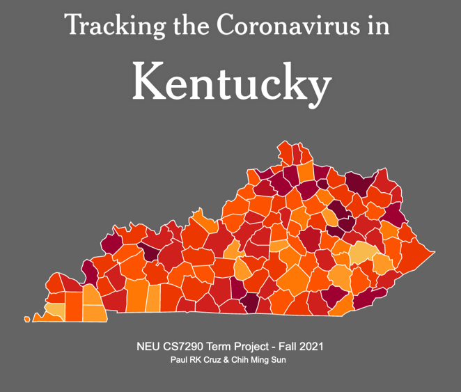

Project Scope:
Since 2020, the COVID-19 virus spread across the worldwide. Until today, the virus crisis remains effect everyone in the world. The first death case in the USA was from March 2020. Since then, the tracking system was built by the Centers for Disease Control and Prevention. All COVID-19 pandemic data is a large dataset. Scientists are attempting to use what we have learned to avoid a future pandemic.
Project Description:
This Dashboard`s aim is to provide brief background for how fast the Sars-2 virus spread across the United States during this pandemic. The data presented here mainly focuses on Jefferson County, Kentucky,to assess the cases rates to tell whether we can ascertain if the Covid-19 vaccines are improving the current situation.
Key Stakeholder
YuTing Chen, MPH, MS, Manager, Data Scientist in Louisville Metro Department of Public Health and Wellness Center for Health Equity.
Data References:
Worldwide Coronavirus Source Data
New York Times
Open Data from data.louisvilleky.gov
Findings:
Upon analysis of COVID-19 cases in both the State of Kentucky, its county of Jefferson, and the USA, we have made 3 key findings.
1. Total cases reported per week indicated a wave in infections, correlating to new variants, combined with weeks of new case decline
2. Jefferson County has undergone many waves
3. Vaccination has played a large role in the State of Kentucky and its Jefferson County of lowering the number of cases being reported, thus lowering the number of people becoming sick. However, this has not stopped the spread of the Sars-Cov-2 virus.
This map details how the Sars-2 Virus spread throughout the United States over the past 2 years.
USA - New Cases in the Past Week
Cases across the United States have fluxuated, depending on which variants were spreading in the respective time periods.
Kentucky - New Cases in the Past Week
In the State of Kentucky, cases are beginning to rise, at the time where the most individuals have been vaccinated.
Jefferson County, KY - New Cases in the Past Week
In Jefferson County, Kentucky, cases are following the same trend as the state with very simliair new cases per week.
Kentucky, Total Daily Vaccinations
From February 19 - Dec 09, vaccinations were heavy at first, then began to level off, which could be due to many individuals getting the first vaccine at or around the same time, and later acquiring the second vaccine and/or booster dose.
Map of the percentage of people in Kentucky with at least one vaccine, by County. December 2021
Source
Vaccinations in the the State of Kentucky range from 15-55%, with most being in the North.
Map of the average daily cases per 100K people in Kentucky, by County. December 2021
Source
Though vaccinations have arisen, the incidence rate of 45.76 per 100K people remains high.